Tutorial Darknet YOLOv4 Model¶
The tutorial follows the recommendations on importing an original model and shows how to import an original Darknet YOLOv4 model of object detection use case, and Darknet framework.
Model |
Use Case |
Framework |
Source |
Dataset |
|---|---|---|---|---|
In this tutorial, you will learn how to:
Import the model.
Create a dataset.
Analyze the model inferencing performance.
Optimize the model.
Analyze the model accuracy performance.
Create deployment package with the model.
Import the model¶
Import YOLOv4
Obtain Model
Darknet model is represented as .weights and .cfg files. Download a pretrained model file yolov4.weights from the following GitHub repository.
Convert Model to Supported Format
Convert the model to one of the input formats supported in the DL Workbench, for example, TensorFlow*, ONNX*, OpenVINO™ Intermediate Representation (IR), and other formats_.
2.1 Find Similar Model Topology in the Open Model Zoo
Since the model is not supported directly in the OpenVINO and the DL Workbench, according to the model import recommendations, you need to convert it to a supported format. To do that, look for a similar topology in the Open Model Zoo repository.
Go to the Open Model Zoo (OMZ) documentation , find YOLOv4 model, and use the information to get the required model description:
which input format should be used for the model of your framework
how to convert the model to this format
how to configure accuracy of the model
2.2 Find Converter Parameters
Open model.yml file in the OMZ repository, and find the information on the model input format. Here you can see that the required format for the YOLOv4 model is SavedModel:
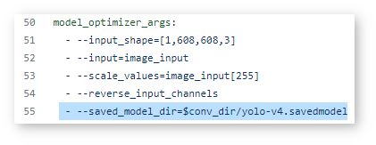Open the pre-convert.py file, and find the parameters required to use the converter: the configuration file, the weights file, and the path to the converted model.
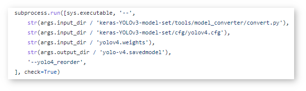2.3 Download Darknet-to-TensorFlow Converter
Go to the converter repository and clone it:
git clone https://github.com/david8862/keras-YOLOv3-model-set.git
git clone https://github.com/david8862/keras-YOLOv3-model-set.git
2.4 Optional. Prepare Virtual Environment
Install Virtual Environment
python3 -m pip install virtualenv
python -m pip install virtualenv
Create Virtual Environment
python3 -m virtualenv venv
python -m virtualenv venv
Activate Virtual Environment
source venv/bin/activate
venv\Scripts\activate
2.5 Install Requirements
Go to the requirements.txt file to find the converter dependencies. Adjust it for your system, if necessary. For example, if you do not have a GPU device, change tensorflow-gpu dependency to tensorflow. Install the requirements:
python3 -m pip install -r ./keras-YOLOv3-model-set/requirements.txt
python -m pip install -r .\keras-YOLOv3-model-set\requirements.txt
2.6 Convert Darknet Model to TensorFlow
Run the converter by providing the paths to the configuration file, the pretrained model file, and the converted model.
In case you fine-tuned your model based on the publicly available configuration file of the Yolov4, you also need to use –yolo4_reorder flag. If you did not, open the configuration file yolov4.cfg and check the order of yolo layers. If the yolo layers are described in ascending order, then you can proceed without this flag. Otherwise, you need to use it.
Organize the folders and files as follows and execute the code in the terminal or PowerShell:
|-- keras-YOLOv3-model-set
|-- tools
|-- model_converter
|-- convert.py
|-- cfg
|-- yolov4.cfg
|-- yolov4.weights
|-- saved_model
Run the converter:
python keras-YOLOv3-model-set/tools/model_converter/convert.py keras-YOLOv3-model-set/cfg/yolov4.cfg yolov4.weights yolov4.savedmodel --yolo4_reorder
python keras-YOLOv3-model-set\tools\model_converter\convert.py keras-YOLOv3-model-set\cfg\yolov4.cfg yolov4.weights yolov4.savedmodel --yolo4_reorder
Upload Model
Open the DL Workbench in your browser and click Create Project on the Start Page.
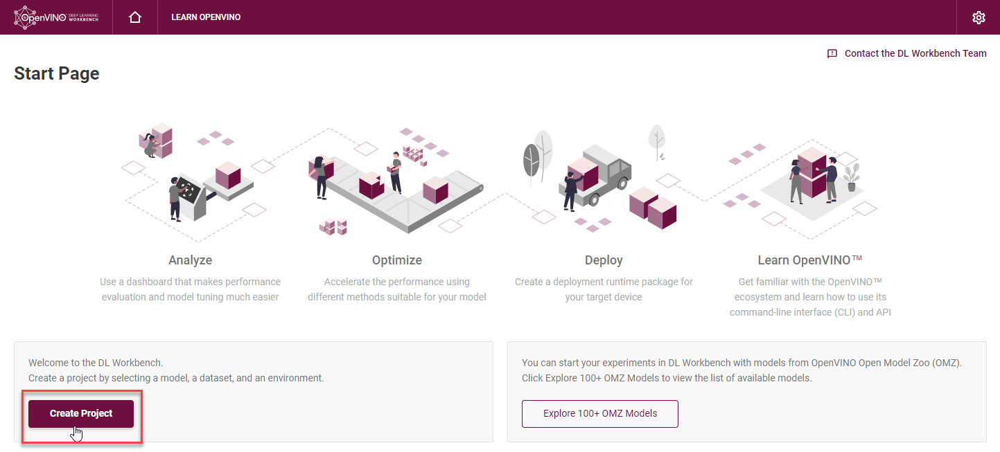On the Create Project page, select Import Model.
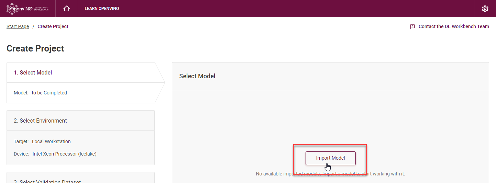Open Original Model tab:
Select TensorFlow framework and 2.X TensorFlow version.
Click Select Folder and provide the folder with the model in SavedModel format. Make sure you selected the folder, not the files it contains, and click Import.
Note
To work with OpenVINO tools, you need to obtain a model in Intermediate Representation (IR) format. IR is the OpenVINO format of pre-trained model representation with two files: XML file describing the network topology and BIN file containing weights.
Specify model parameters:
Select RGB color space in General Parameters since it was used during model training
Specify Inputs:
Check Specify Inputs (Optional)
Select NHWC layout as the Original Layout
Set the following parameters:
N = 1: number of images in the batch
H = 608: image height
W = 608: image width
C = 3: number of channels, RGB
Set scales to 255 as specified in the Darknet sources:
Click Convert and Import
You will be redirected to the Create Project page where you can see the status of the model import.
Optional. Visualize Model
To check how your model works and explore its properties, click Open under the Actions column.
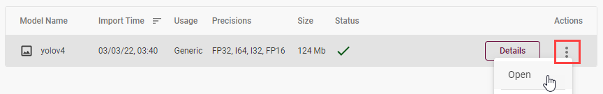Upload your image and check the prediction boxes to evaluate the model:
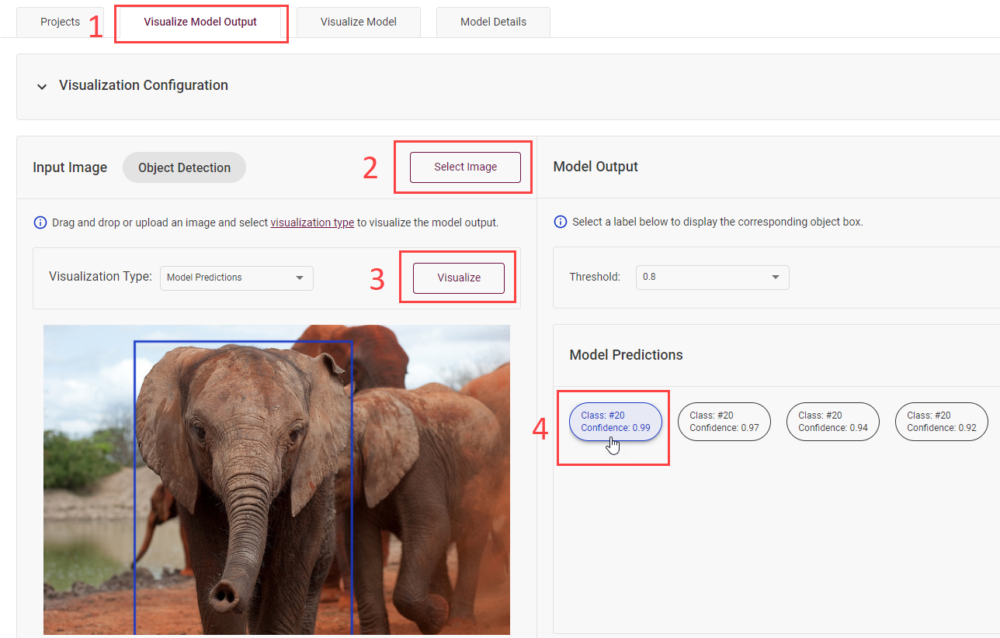Note
If the imported model predicts the right classes, but the boxes are not aligned with the objects in the image, you might have missed scales and means parameters during import. Refer to the OMZ documentation and try to import the model again.
Go back to the Create Project page, click on the model to select it and proceed to the Next Step.
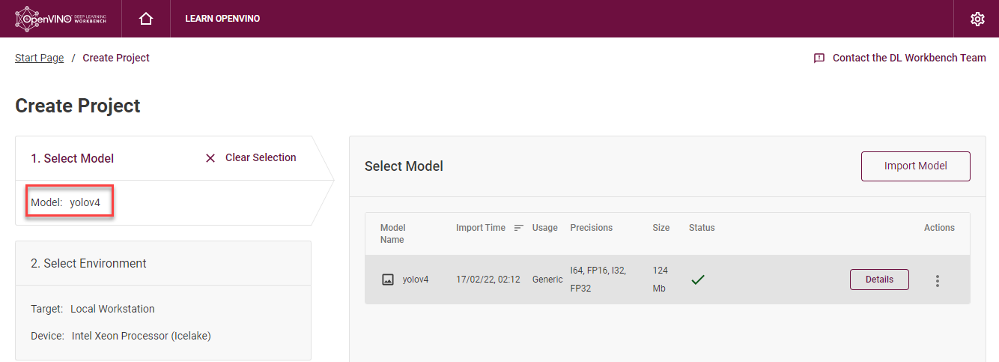On the Select Environment stage you can choose a hardware accelerator on which the model will be executed.
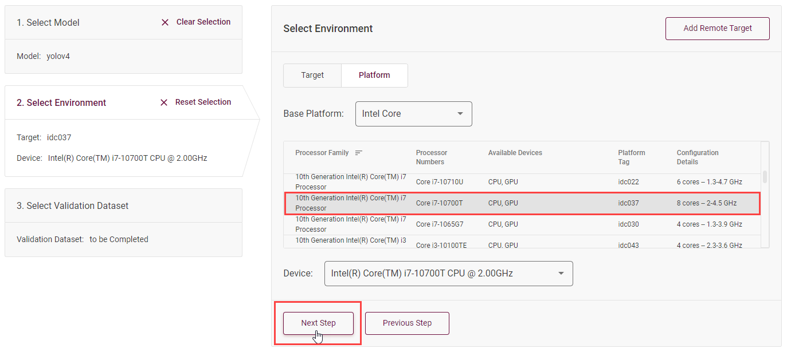Create a dataset¶
Upload Not Annotated Dataset
Validation of the model is always performed against specific data combined into datasets. The data can be in different formats, depending on the task for which the model has been trained. Learn more in the Dataset Types documentation.
On the third step, click Import Image Dataset.
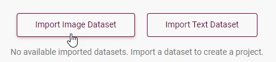For this tutorial, we will create a Not Annotated dataset with default images from the DL Workbench. Add images representing your specific use case and use augmentation, if necessary. Click Import.
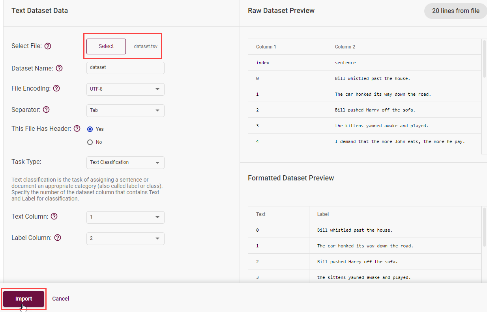Select the dataset by clicking on it, and click Create Project.
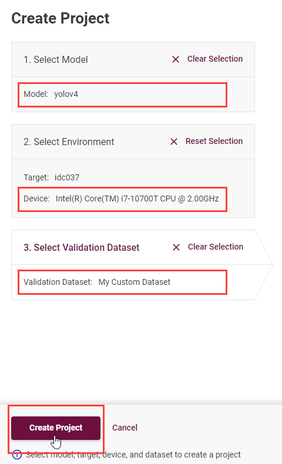Analyze the model inferencing performance¶
Measure inferencing performance and learn about streams and batches
When the baseline inference stage is finished, we can see the results of running our model on the CPU. We are interested in two metrics: latency and throughput.
Latency is the time required to process one image. The lower the value, the better.
Throughput is the number of images (frames) processed per second. Higher throughput value means better performance.
Streams are the number of instances of your model running simultaneously, and batches are the number of input data instances fed to the model.
DL Workbench automatically selects the parameters to achieve a near-optimal model performance. You can further accelerate your model by configuring the optimal parameters specific to each accelerator.
Optimize the model¶
Optimize performance using INT8 Calibration
One of the common ways to accelerate your model performance is to use 8-bit integer (INT8) calibration. Calibration is the process of lowering the model precision by converting floating-point operations (for example, 32-bit or 16-bit operations) to the nearest 8-bit integer operations. INT8 Calibration accelerates Deep Learning inference while reducing the model size at the cost of accuracy drop.
To calibrate a model and then execute it in the INT8 precision, open Optimize Performance tab and click Configure Optimization button.

The Default Method and Performance Preset are already selected to achieve better performance results. Click Optimize:
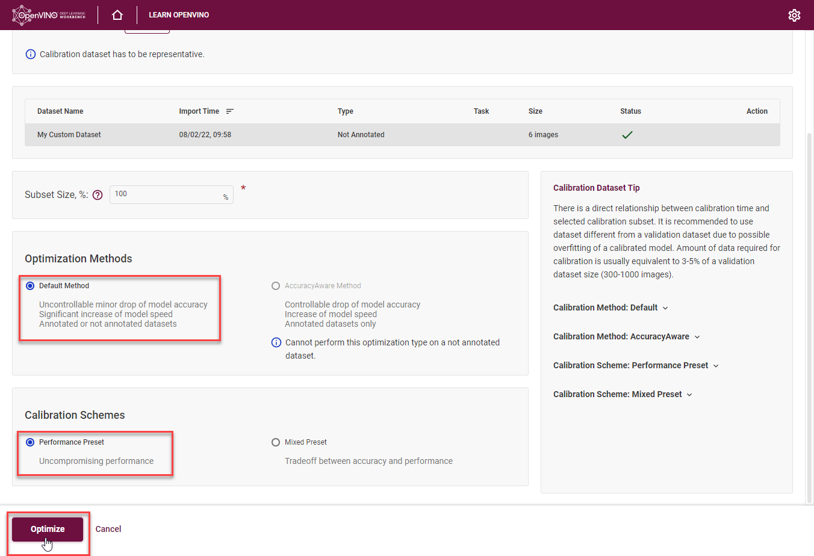The project with the optimized yolov4 model page opens automatically. To check the performance boost after optimization, go to Perform tab and open Optimize Performance subtab.
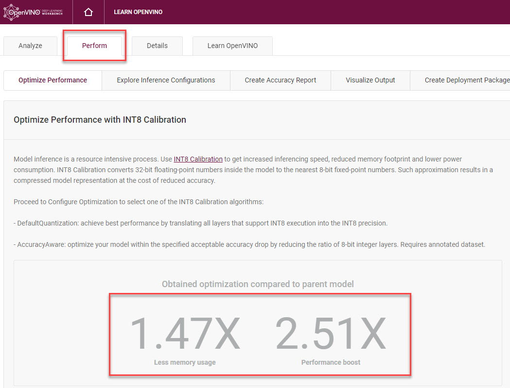From the optimization results, we see that our model has become 2.51x time faster and takes up 1.47x times less memory. Let’s proceed to the next step and check the optimized model accuracy.
Measure Accuracy¶
Compare optimized and original model accuracy performance
Go to the Perform tab and select Create Accuracy Report:
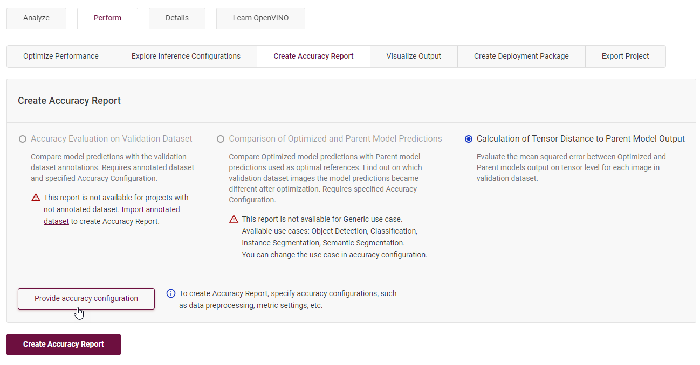Comparison of Optimized and Parent Model Predictions Report allows you to find out on which validation dataset images the predictions of the model have become different after optimization.
To enable the creation of this report type, change your model use case in the accuracy configuration. DL Workbench automatically detects Object Detection use case and other parameters for your model. Click Save:
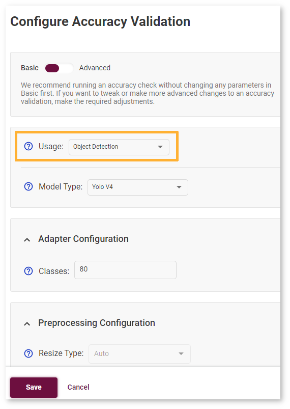You will be redirected back to the Create Accuracy Report page. Select Comparison of Optimized and Parent Model Predictions and click Create Accuracy Report:
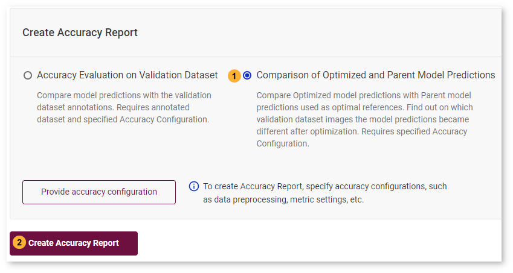Accuracy measurements are performed on each dataset image. Creating an Accuracy Report may take some time if the dataset is considerably big.
Interpret Report Results
The report has two display options: Basic and Advanced mode. To learn more about each column of the Accuracy Report, refer to Interpreting Accuracy Report page.
Each line of the report table in basic mode contains a number of detected objects in the image: A. Optimized Model Detections. The number of objects in Parent model predictions for the image is indicated in B. Parent Model Detections. If the numbers do not match, the model must be incorrect.
To assess the difference between Optimized and Parent model predictions, check Matches between A and B. Matches show the number of times the Optimized model detected the same location of an object as the Parent Model.
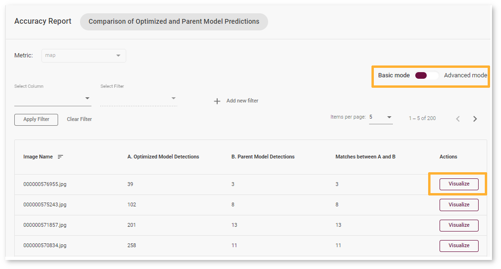Note
To sort the numbers from lowest to highest, click on the parameter name in the table.
Click Visualize button under the Actions column to compare the predictions and annotations for a particular image.
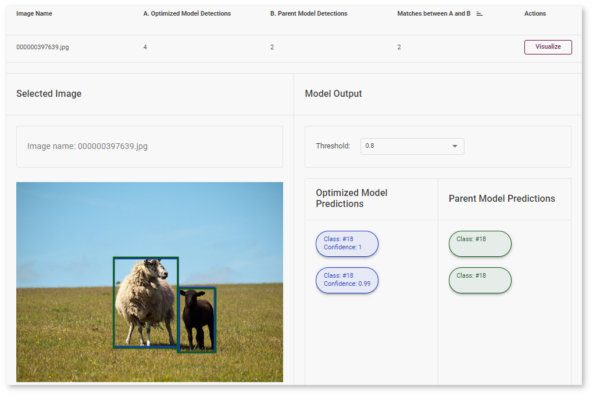In our case, the YOLOv4 model detected 2 objects of class 18 (sheep). These detections coincide with the dataset annotations: 2 objects of the same class as predicted by the model. The number of matches also equals 2. In the image, it is shown by almost identical bounding boxes for each object.
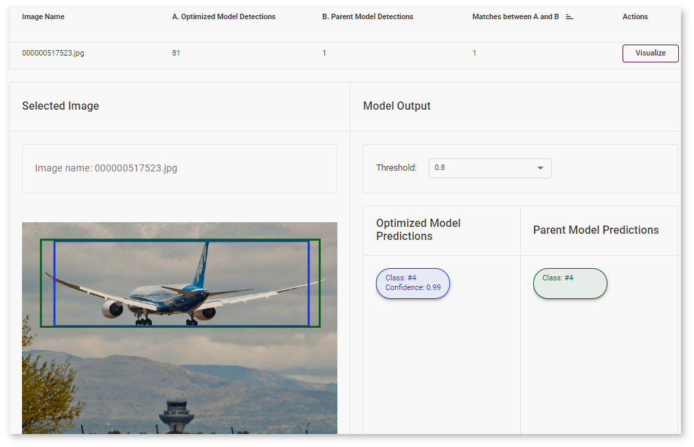Let’s consider another example image. The model detected 1 objects of class 4 (airplane). But in the image, you can see that the bounding is noticeably different from the parent model prediction.
After evaluating the accuracy, you can decide whether the difference between imported and optimized models predictions is critical or not:
If the tradeoff between accuracy and performance is too big, import an annotated dataset and use AccuracyAware optimization method, then repeat the steps from this tutorial.
If the tradeoff is acceptable, explore inference configurations to further enhance the performance. Then create a deployment package with your ready-to-deploy model.
Create deployment package with the model¶
Prepare a runtime for your application
OpenVINO allows to obtain a customized runtime to prepare an application for production. Open Create Deployment Package tab and include the necessary components to get a snapshot of OpenVINO runtime ready for deployment into a business application.
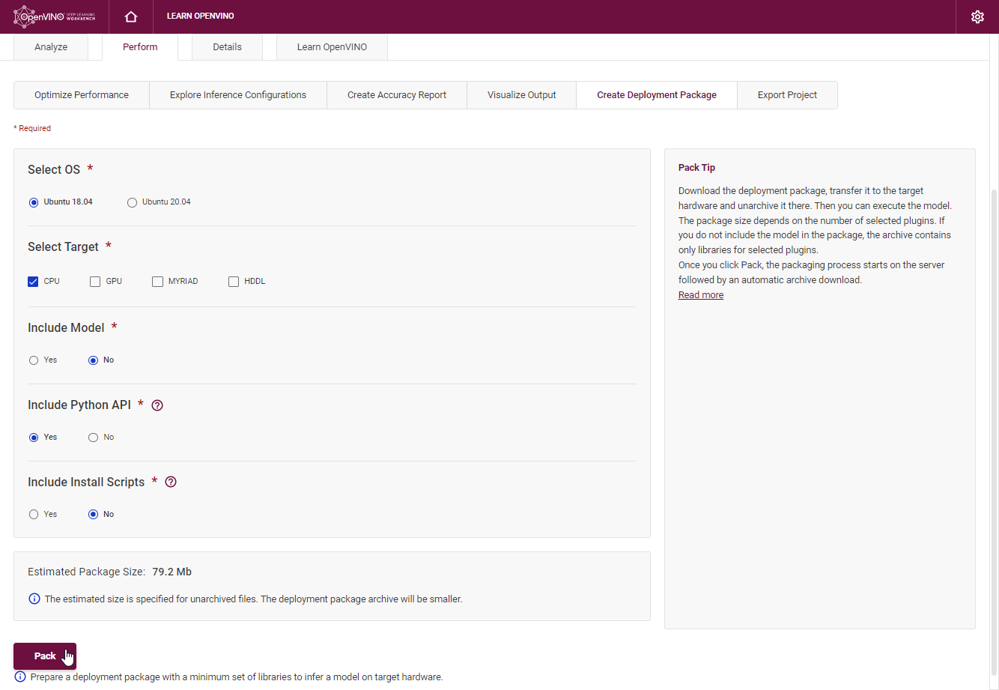See Also¶
Congratulations! You have completed the DL Workbench workflow for yolov4 model. Additionally, you can try the following capabilities: